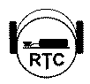

RTC: Radio Telegraphy Club
Motto: CWFE CW forever
Founded on 1990.03.10 by 18 CW enthusiasts in the former GDR (Y2).
The goals were to preserve, foster, and encourage the use of CW in
ham radio. The emphasis was on operator skills that handle CW without
computers, keyboards, and decoders. Accepted any German (full
membership) or foreign (associated membership) CW enthusiast willing
to join provided (s)he could give evidence of sufficient CW activity
on the bands. The club operated the club stations DKØRTC and
DLØRTC. Three awards were issued, namely W-RTC-M, CWD, CWAA.